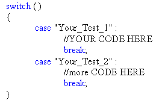
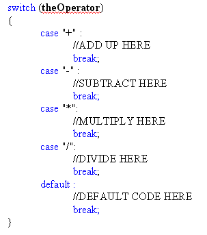

Switch Statements in C# .NET
<< Continues from the previous lesson
An easier way to code the calculator is by using a switch statement instead of an else if statement. A switch statement allows you to check which of more than one option is true. It's like a list of if statements. The structure of a switch statement looks like this:

After the word switch, you type a pair of round brackets. In between
the round brackets, you type what you want to check for. You are usually testing
what is inside of a variable. Then type a pair of curly brackets. In between
the curly brackets, you have one case for each possible thing that your
variable can contain. You then type the code that you want to execute, if that
particular case is true. After your code, type the word break. This enables
C# to break out of the Switch Statement altogether.
We'll use our calculator as a coding example.
Our four buttons set a Boolean variable to either true or false. Instead of doing this, we could have the buttons put a symbol into a string variable. Like this:
string theOperator;
private void btnPlus_Click(object sender, EventArgs e)
{
total1 = total1 + double.Parse(txtDisplay.Text);
txtDisplay.Clear();
theOperator = "+";
}
So the last line of code puts the + symbol into a string variable we've called theOperator. It will only do this if the button is clicked. The other buttons can do the same. We can then use a switch statement in our Equals button to check what is in the variable we've called theOperator. This will tell us which button was clicked. Here's the code that would go in the Equals button.

In between the round brackets after the word switch, we've typed the name of our variable (theOperator). We want to check what is inside of this variable. It will be one of four options: +, -, *, /. So after the first case, we type a plus symbol. It's in between double quotes because it's text. You end a case line with a colon:
case "+" :
The code to add up goes on a new line. After the code, the break word is used. So what you're saying is:
"If it's the case that theOperator holds a + symbol, then execute some code"
We have three more case parts to the switch statement, one for each of the math symbols. Notice the addition of this, though:
default :
//DEFAULT CODE HERE
break;
You use default instead case just "in case" none of the options you've thought of are what is inside of your variable. You do this so that your programme won't crash!
Exercise E
Adapt the equals button on your calculator so that it uses a switch statement
instead of if .. else if Statements. You
can get rid of all your Boolean variables.
Switch statements can be quite tricky to get the hang of. But they are very useful if you want to test a variable for a list of possible things that could be in the variable.